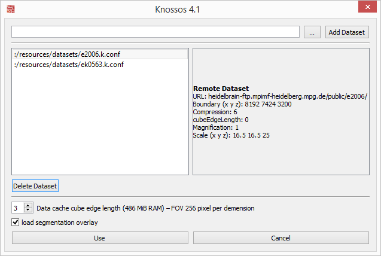
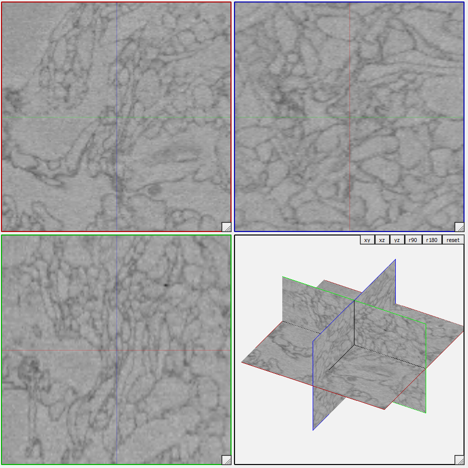
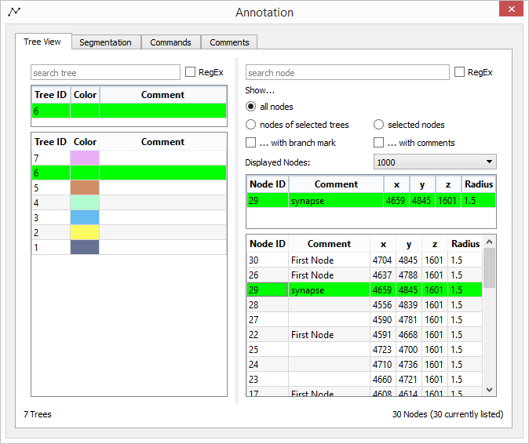
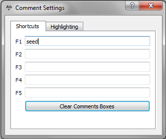

Knossos Quickstart Guide
This tutorial should give a very rough introduction and overview about Knossos 4.1.0 and its features.
Knossos is a multi-platform scientific tool written in C++† to visualize large volume image data generated by Serial Blockface Scanning Electron Microscopy (SBFSEM). It provides the ability to overlay the image data with a user generated skeleton structure, representing the spatial structure and the connectivity of labeled neurons, and displays a three dimensional model of it.
†Knossos uses the following libraries: Qt 5, QuaZIP, PythonQt, OpenGL, Boost, glut, google-snappy, libCURL, openJPEG 2000.
Lanching Knossos
- Execute Knossos 4.1.0.
- Open the Dataset Chooser Dialog at the top-left menu entry:
File - Choose Dataset...
- To load a dataset from your computer:
- Press
... and navigate to the knossos.conf file of that dataset,
- press on
Add Dataset (the dataset appears in the list on the left side),
- select the dataset in the list and press on
Use to load it.
- The Data cache cube edge length option sets the Supercube Edge, i.e. the number of cubes to be loaded per viewport. Higher numbers require more memory.
- A supercube edge size of
5 is optimal for tracing (requires 250 MB RAM). Other sensible settings are 7 (requires 686 MB RAM) or 3 (54 MB RAM).
- On exit, Knossos remembers the last used dataset and automatically loads it on next start.

You can see four viewports which show the 3D image data:
XY plane of the stack (upper left, red border)XZ plane of the stack (lower left, green border)YZ plane of the stack (upper right, blue border)- 3D view of the annotation (lower right)

In the tool bar, you can enter or paste coordinates in the format x, y, z, wheron the view centers automatically on the target coordinate.
The most relevant Knossos window is the annotation window:

This window displays your annotation progress. Select either Tree View or Segmentation to see your skeleton structure/segmentation.
Saving/Auto-Saving/Loading
- The annotation data will be saved automatically every five minutes if changes have been made.
- To manually save your data, press
Ctrl+S or select File - Save Annotation.
- Annotation files can be loaded into Knossos by choosing
File and Load Annotation. Alternatively, you can also choose between recently saved files by pressing Files and Recent Annotation File(s).
Basic Viewport Handling
To move through the dataset, place the mouse cursor in one of the three slice plane viewports and
- press
f or d or use the arrow keys: Move one layer forward or backward,
- press
f or d in combination with Shift: Jump ten layers forward or backward,
- or move the mouse wheel up or down.
By pressing the left mouse button, you can
Skeleton Tracing
Nodes are placed by a right click in one of the three slice plane viewports, and are automatically linked to the last node. To just “drop” nodes without linking, you have to change the work mode via Edit Skeleton and Work Mode in the menu bar.
- The currently active node can be recognized by its number which appears beside the point or via the Annotation window.
- You can activate a node by holding down
Shift and left-clicking it or by selecting the node in the Tree View tab of the Annotation window
- Press
x/Shift+X in one of the viewports to activate the next/previous node. To change the active tree, press z or Shift+Z.
- To jump to the active node press
s.
- You can delete the active node by pressing
Del on your keyboard.
- If you want to reposition a node, simply click on the node with the middle mouse button and drag it to another position. The node does not have to be your active node.
- You can add branch nodes by holding
Ctrl while pressing the right mouse button. To transform a normal node to a branch node press b or choose Push Branch Node in the Annotation window. To jump to the last placed branch node, press j or use Pop & Jump in the Annotation window. This transforms the branch node to a normal node.
- Different node colors indicate different node types:
- Blue: Branch node
- Yellow: Commented node (will be blue, if it is also a branch node)
- To link two non-connected nodes or to unlink two connected nodes, activate one of them, hold
Alt and left click the second node or hold Shift and click on the second node with the mouse wheel. Alternatively, this can also be done in the Annotation window.
<!– TODO * If you want to delete a huge part of the skeleton:
- First, isolate the segment by cutting the connection points to other segments.
- Click on the outermost node of that segment (a node that is on the edge of your segment),
- press
Alt and the
–>
You can add a comment on trees and nodes by using the lists in the Annotation window.
- If you use some comments regularly, you can enter them in the Comments tab of the Annotation window, and add them to the active node by pressing
F1-F10.
- If you enable Use custom comment colors and Use custom comment radius, you can also specify the highlighting color and radius for these nodes.

Shortcuts
Application Shortcuts
| Shortcut |
Action |
| Ctrl+O |
Load annotation from file |
| Ctrl+S |
Save annotation |
| Ctrl+C |
Copy current coordinates |
| Ctrl+V |
Paste coordinates |
| Ctrl+H |
Open this documentation |
Ctrl+Q
(equal to Alt+F4) |
Close Knossos |
Tree Shortcuts
| Shortcut |
Action |
| C |
Create a new tree |
| Z/Shift+Z |
Move to next/previous tree (by tree ID) |
| X/Shift+X |
Move to next/previous node (by node ID) |
Node Shortcuts
| Shortcut |
Action |
| S |
Jump to active node |
| DEL |
Delete active node |
| B |
Mark active node as branch node |
| J |
Jump to last branch node |
| Shift + left click on node |
Reduce selection to clicked node |
| Ctrl + left click on node |
Add/Remove node from selection |
| Ctrl + left mouse drag |
Pull selection square to select multiple nodes |
Alt + left click on node
(equal to SHIFT + mouse wheel click on node) |
Add/delete segment between clicked node and active node |
| Mouse wheel hold and drag on node |
Move node to new position |
| A |
Change to work mode “Add node” |
| W |
Change to work mode “Link node” |
| N/P |
Jump to next/previous comment node |
| F1-F10 |
Custom comment shortcuts |
Viewport Shortcut
| Shortcut |
Action |
| Left/Right arrow key |
Jump [Jump Frames] steps left/right in active viewport
(Jump Frames can be defined at “Preferences”>”Dataset Navigation”) |
| SHIFT + Left/Right arrow key |
Jump 10 steps left/right in active viewport |
| Up/Down arrow key |
Jump [Jump Frames] steps up/down in active viewport |
| SHIFT + Up/Down arrow key |
Jump 10 steps up/down in active viewport |
F/D
(equal to mouse wheel forward/backward) |
Jump [Jump Frames] steps forward/backward in active viewport
(Jump Frames can be defined at “Preferences”>”Dataset Navigation”) |
| SHIFT + F/D |
Jump 10 steps forward/backward in active viewport |
I/O in orthogonal viewports
(equal to CTRL + mouse scroll) |
Zoom in and out of orthogonal viewports |
| CTRL+ALT+left mouse drag |
drag viewport
(restore original position by clicking on “reset viewports” in the tool bar) |
| 3 |
Toggle viewport crosshairs |
Knossos Full Documentation
Branch Points
Branch points help you to relocate important nodes in your skeleton.
- This feature is mainly used to find a location where the cell divides into two branches. Since you can only follow one branch, you have to find the other one later to trace it.
- Branch points are stacked. This means that new branch points will be stacked onto the old ones in the branch point file and when you jump to them you first come to the newer branch points and afterwards to the older ones.
Add Branch Point
- You can make a node a branch point by simply pressing
B on your keyboard while the node is activated. The color of the node turns to blue.
- Another possibility is to use
Ctrl+(RB) on a new position. A node will be added which is simultaneously marked as a branch point. This node does not automatically become active (in comparison to normal node placing).
Jump to Branch Point
- Press
J on your keyboard to jump to the last made branch point. The flagging as a branch point is automatically removed. If you want to keep it, press B again on your keyboard.
- Another possibility is to click on Pop and (J)ump in the annotation window. See Branch Point (annotation window) for further information.
Remove Branch Point
A branch point is removed at the time you jump to it.
Coordinates
In the upper left section of Knossos, you can enter the x, y, and z coordinates of a location you want to move to, e.g. to find the seedpoint of your tracing.
Simply type each coordinate into the respective field, or copy your coordinates from an excel file (separated by blanks, e.g. 100 100 100) and click on the Paste button (or press Ctrl+V on your keyboard).
Copy coordinates
- If you want to extract the coordinates of your current location, click on the
Copy button left from the coordinate fields. The coordinates will be copied to your clipboard, separated with blanks.
Work Mode
Here you can choose between different types of placing a node.
Add node
This work mode does not connect the first node you place with any previously active node. Further placed nodes will be connected as usual. Pressing a on your keyboard will do the same.
Link with active node
This is the normal work mode, i.e. each new placed node will be connected to the previously active node (and becomes the next active node).
Drop nodes
This work mode simply places single nodes without connecting them. This is a special work mode which you only need if you want to drop “node clouds” e.g. for glia cells.
Clear Skeleton
This menu item will clear the whole cube from any skeleton you traced/loaded. You will be asked by a dialog if you really want to do this.
Load Annotation…
Select File - Load Annotation... to load an annotation file.
- Browse through your folders and choose a file. Then click on “Open”
- Alternatively, simply drag and drop a annotation file from your computer onto Knossos to load it.
- A dialog will appear to ask you if the current annotation should be overriden by the new one or if they should be merged together.
Knossos supports both NML files and .k.zip files.
Recent Annotation File(s)
This menu item will show you a list of recently loaded annotation files.
Save Annotation File
Here you can save your current annotations on your computer. Pressing Ctrl+S will do the same.
Standard save folder (for annotation files)
If you haven’t saved a file yet using Save Annotation as..., the file will be stored in the annotationFiles folder in your operating system’s standard application data folder. Under Windows, this is %LocalAppData%\MPIMF\Knossos [version]\annotationFiles. The file name will be a combination of the date and time when you started Knossos to do tracing.
- If you have already stored a file in a specific folder and used a file name without “.000.k.zip” at the end, Knossos will save a new file in this folder using the previous file name and adding “.000.k.zip”. If the file name already contains “.000.k.zip”, Knossos will name the subsequent saved files “.001.k.zip”, “.002.k.zip” and so on, given that you did not turn off the option Auto Increment Filename (for further information see Data Saving Options).
Save Annotation As…
To specify the file name and the folder for your annotation file, choose this menu item.
About
This menu item opens a window containing some developer information about Knossos.
Documentation
Here you can find Knossos’ documentation
Shortcuts
(In this paragraph, LMB means “Left mouse button”, RMB means “Right mouse button”, and MMB means “Middle mouse button”. Also keep in mind that on OS X, Ctrl is the Cmd key.)
There are some key combinations which might help you to be faster on Knossos:
Shift+↑↓←→: Moves dataset 10 planes into the corresponding direction instead of 1 plane for faster scrolling.Shift+F/D: Moves dataset 10 planes forwards/backwards, for faster perpendicular scrolling.Ctrl+S: Saves your annotation in the same way as the autosaving feature does (auto increment number). See Save file.Ctrl+V: If you have copied the coordinates into clipboard you can use this to quickly paste them into Knossos and jump to that location. See Paste coordinates.Ctrl + Mouse Wheel: Zooms in and out of the three orthogonal viewports. In the 3D viewport you don’t need to hold Ctrl.Shift + Mouse Wheel: Changes the node radius of the active node. See Node Radius for further information.Shift+LMB on node: Activates node.Ctrl+RMB in slice viewport: Adds a node which is simultaneously marked as a branch point (but does not become an active node).Shift+MMB on a node: Deletes segment between the active and the clicked node. See Delete segment.Ctrl+MMB on a node: Adds segment between the active and the clicked node. See Connect nodes.
All Available Shortcuts
Application Shortcuts
| Shortcut |
Action |
Ctrl+O |
Load annotation from file |
Ctrl+S |
Save annotation |
Ctrl+C |
Copy current coordinates |
Ctrl+V |
Paste coordinates |
Ctrl+H |
Open this documentation |
Ctrl+Q
(equal to Alt+F4) |
Close Knossos |
Tree Shortcuts
| Shortcut |
Action |
C |
Create a new tree |
Z/Shift+Z |
Move to next/previous tree (by tree ID) |
X/Shift+X |
Move to next/previous node (by node ID) |
Node Shortcuts
| Shortcut |
Action |
S |
Jump to active node |
Del |
Delete active node |
B |
Mark active node as branch node |
J |
Jump to last branch node |
Shift+LMB on node |
Mark clicked node as active node |
Ctrl+LMB on node |
Select node for an operation |
Ctrl+LMB drag |
Pull selection square to select multiple nodes |
Alt+LMB on node
(equal to Shift + mouse wheel click on node) |
Add/delete segment between clicked node and active node |
| Mouse wheel hold and drag on node |
Move node to new position |
A |
Change to work mode “Add node” |
W |
Change to work mode “Link node” |
N/P |
Jump to next/previous comment node |
F1-F10 |
Custom comment shortcuts |
Viewport Shortcuts
| Shortcut |
Action |
| Left/Right arrow key |
Jump [Jump Frames] steps left/right in active viewport
(Jump Frames can be defined at “Preferences”>”Dataset Navigation”) |
| Shift + Left/Right arrow key |
Jump 10 steps left/right in active viewport |
| Up/Down arrow key |
Jump [Jump Frames] steps up/down in active viewport |
| Shift + Up/Down arrow key |
Jump 10 steps up/down in active viewport |
F/D
(equal to mouse wheel forward/backward) |
Jump [Jump Frames] steps forward/backward in active viewport
(Jump Frames can be defined at “Preferences”>”Dataset Navigation”) |
| Shift + F/D |
Jump 10 steps forward/backward in active viewport |
I/O in orthogonal viewports
(equal to Ctrl + mouse scroll) |
Zoom in and out of orthogonal viewports |
Ctrl + Alt + Left Mouse drag |
drag viewport
(restore original position by clicking on “Reset VP Positions” in the toolbar) |
| 3 |
Toggle viewport crosshairs |
- There are many ways in Knossos to move through the dataset. They are listed here in priority order:
- You can use your left mouse button to either drag the dataset by clicking and pulling in one direction, or to recenter the view on the position you clicked (depending on the Work Mode you chose)
- Use the arrow keys on your keyboard to move into the corresponding direction (depending on which slice viewport your mouse cursor is currently positioned).
- Using the arrow keys while holding down
Shift will move 10 planes.
- Use your mouse wheels to move perpendicularly to the viewport where your mouse cursor is currently positioned.
- Using
D and F on your keyboard will also move the dataset perpendicularly an amount of [Jump Frames] planes, [Jump Frames] can be defined under “Preferences” –> “Navigation Settings”.
- Using F/D while holding down Shift will perpendicularly move 10 planes.
- Placing a node using your right mouse button will recenter the view on the node. (Adding one using
Ctrl + right mouse button won’t do so).
- You can jump to the currently active node using
s on your keyboard.
- By entering a coordinate in the upper left coordinate fields you can jump to a desired location. See here for further information.
- You can jump to a node previously marked as a branch point using J on your keyboard or using your Annotation window.
- You can search for nodes with comments using N and P on your keyboard or your Annotation window.
- There you can also search for a specific comment by typing it into the field Search node.
Nodes [skeleton nodes, skeleton points]
Activate nodes
- The currently active node is highlighted by its node ID which is shown right near to the node.
- New placed nodes will be connected to the currently active node, given that the option Link with active node is enabled (default).
- Furthermore, several functions such as Delete node, Connect nodes/Make segment, Delete segment and branch points are related to the currently active node.
- You activate a node by clicking on it with your left mouse button while simultaneously having the Shift key on your keyboard pressed.
- Another possibility is to choose the desired node ID in the Annotation window.
Add nodes
- You place a node by clicking with the right mouse button into one of the slice viewports.
- The first node of a skeleton is always marked blue and gets the comment “First Node” automatically.
- Furthermore, the program centers the viewport on the node you have just placed.
- Further nodes you place will be automatically connected with the previously placed (or activated) node, given that the option Link with active node is enabled (default).
Connect nodes
- You can connect two nodes with each other by activating one of the two nodes and clicking on the other one with the middle mouse button while simultaneously holding down the
Ctrl key on your keyboard.
- This is helpful, e.g. if you separated two skeleton parts by accident and you want to connect them again.
- Another way is to select both nodes in the Annotation window’s Tree View and link them by the right-click menu entry “(Un)link nodes”. Repeating this unlinks the nodes again.
Delete segment
- You can delete the connection (segment) between two nodes by activating one of them and clicking on the other with your middle mouse button while holding down the Shift key on your keyboard.
- This is helpful if you want to separate two parts of your skeleton (to delete one of them or to make two trees according to Split Trees)
Delete node [remove node]
- You can delete a node by selecting it (
Ctrl+left click) and pressing DEL on your keyboard.
- Another way is to use the Tree View of the Annotation window: Tree View)
Move node [reposition node, drag node]
- If you want to move a node (e.g. to bring it to the center of the cell), simply click on the node with the middle mouse button and drag it to another position. The node does not have to be your active node. You can also enter the desired coordinates for the node in the Tree View of the Annotation Widget.
Select nodes [operate on multiple nodes]
- Sometimes you want to perform actions on multiple nodes, e.g. delete many nodes at once. You do this by selecting nodes in the viewport:
Ctrl+left-click on a node selects it. Ctrl + left mouse drag in the viewport pulls a selection square that selects all nodes within.
Ctrl + leftclick a selected node to unselect it, or press ESC to undo the entire node selection.- Press DEL to delete all selected nodes.
- The selected nodes are highlighted in green in both the viewports and the Tree View of the Annotation Window. Right-clicking on the node list in the Tree View opens a context menu where you can perform many operations on the selected nodes (see here).
- If you have exactly one node selected, it becomes the active node. I.e. the next placed node will be connected to this one.
- Also, when you place a new node, it becomes the next active node, so that the tracing can be continued.
- If no nodes are selected, the last annotated or edited node is automatically selected and made active.
Node ID
- The Node ID of each node is unique among all skeletons traced/loaded in the dataset. Each new added node gets a new ID, starting from 1. This enables you to relocate each node.
Load Custom Preferences
- Here, you can load your previously saved custom GUI preferences. A window will open and you are asked for the location of the settings-file.
- Custom preferences contain your last used file and folder, the position of your windows, the size of Knossos, the look of your viewports etc.
Save Custom Preferences As
- Here, you can save your current custom GUI preferences. A window will open and you are asked where to save the settings-file containing your preferences.
- The settings-file contains your last used file and folder, the position of your windows, the size of Knossos, the look of your viewports etc.
Data Saving Options
- Here you can change the way of automatically saving your proceedings.
- Enabling the option Auto-Saving will save your skeletons on a time interval according to the field Saving Interval [min].
- By default your data will be saved automatically every 5 minutes. You can change this by typing in another positive value.
- The option Auto Increment Filename is enabled by default and will automatically increase the number “###.nml” in the filename at every saving step. Deactivating this will overwrite the saved files at every saving step.
Viewport Setting
Annotation Window
-
Under “Windows” –> “Annotation Window” you can open an important, additional window with many features.
-
At the bottom of the window the Total Tree Count and Total Node Count show you the number of trees and nodes in the skeleton. Currently listed Nodes shows you how many nodes are now listed in the “Tree View” of the Annotation Window(see below).
Tree View
The Tree View is the first Tab in the Annotation Window. It is separated into a section to list trees and a section to list nodes. Here you have an overview of your whole annotation process and you can do several skeleton changing operations.
Tree section
- Search for trees containing the comment substring entered in the search bar at the top. Check the “RegEx” checkbox to enable a search with a regular expression.
- The list displays all trees with their ID, their color for easy identification and their comment. The active tree is always listed in the first row, separated from the rest.
- Double-clicking a tree in the list makes it the active tree.
- Double click the color of a tree, to change it. And change the comment by writing it into the comment field.
- Select a list entry like in any common table by clicking on it. Select multiple entries in a row by Shift+clicking. Select multiple entries not in a row by
Ctrl+clicking.
- Perform operations on selected trees by opening the context menu on them with a right click. The context menu includes:
- Set as active tree (needs exactly one selected tree)
- Move selected node(s) to this tree (needs exactly one selected tree and at least one selected node)
- Merge trees (needs exactly two selected trees, see Merge Trees)
- Set comment for trees (sets the same comment for all selected trees)
- Restore default color (restores the selected trees’ colors to default colors)
- Delete tree(s) (pressing DEL achieves the same. Deletes all selected trees and their nodes, a confirmation request will show up)
Merge Trees
With the Merge Trees function you can give two trees the same ID, they effectively become components of the same tree.
The Node section
- Search for nodes containing the comment substring entered in the search bar at the top. Check the “RegEx” checkbox to enable a search with a regular expression.
- Filter the displayed nodes after following criteria:
- nodes of selected trees (shows only the nodes of trees currently selected in the tree list)
- selected nodes (shows only nodes that are selected either by the list or in the viewport with
Ctrl+leftclick on node)
- ”… with branch mark”, “… with comments” are optional filters.
- The “Displayed Nodes” drop down restricts the number of displayed nodes to ensure a good performance. If you cannot find a node in the list, because it exceeds the number of displayed nodes, use the filtering mechanisms to find it. If more than several thousand nodes are shown in the list, Knossos will run slower.
- The list displays all nodes with their ID, their radius, position and comment. The active node is always listed in the first row, separated from the rest.
- Double-clicking a node in the list makes it the active node.
- Directly edit a node’s property by writing into its property fields.
- Select a list entry like in any common table by clicking on it. Select multiple entries in a row by Shift+clicking. Select multiple entries not in a row by
Ctrl+clicking.
- Perform operations on selected nodes by opening the context menu on them with a right click. The context menu includes:
- Split component from tree (splits the component containing this node from the tree, see Split Component from tree).
- (Un)link nodes (select two nodes, to add or remove a link between them)
- Set comment for nodes (sets the same comment for all selected nodes)
- Set radius for nodes (sets the same radius for all selected nodes)
- Delete node(s) (pressing DEL achieves the same. deletes all selected nodes, a confirmation request will show up)
- Move selected nodes from one tree to another by dragging and dropping them onto a tree in the tree list.
Split Component from Tree
- Choosing Split Component From Tree checks if the tree with selected node consists of at least two separate components (i.e. one group of nodes is not connected with another group of nodes). If this is the case, then the component with the selected node will become a new tree with an individual (new) ID. For example, this feature can be used if you traced a very long branch and afterwards you recognize that this branch does not belong to your cell. It is easier to delete the first segment at the branchpoint, split the two trees with this function and delete the branch tree, than deleting every single node of the branch.
Commands
In the Commands section, several important functions are accessable.
Active Tree ID
- This shows you the currently active tree ID. This is the tree which is also highlighted in red in all viewports. You can switch to another tree by typing in or toggling to another ID. Using Z/Shift+Z will do the same.
Active Node ID
- This shows you the currently active node ID. You can switch to another node by typing in or toggling to another ID. Using X/Shift+X will do the same.
Branch Points
- Nodes on Stack shows how many branchpoints have been placed yet.
- Clicking on Push (B)ranch Node will transform the currently active node into a branchpoint. Pressing B on your keyboard will do the same.
- Clicking on Pop & (J)ump will lead you to the last placed branchpoint which simultaneously becomes a normal node again. Pressing J on your keyboard will do the same.
- Note: The first node of a tree you begin to trace is always automatically transformed into a branchpoint.
Node Radius
- Here you can change the radius of the node. This is normally not necessary, except for Volume Tracing jobs.
- You can change the default node radius (when new nodes are placed) by typing in another value in the field Default Node Radius or by clicking on Use Last Radius as Default to use the last entered radius.
Locking
- The Locking feature helps, if the task is to trace a cell only in a defined volume. Locking to a Node will prevent you from placing nodes outside the defined radius.
- You can set the desired locking radius in the field Locking Radius. The unit is in voxels (“planes”).
- Clicking on Enable comment locking will activate the radius locking as soon as a node having the comment according to the text in the field below Lock to Nodes With Comment is searched using the comment search feature.
- Another possibility is to Lock to Active Node. By clicking on this button you are only able to place nodes in the defined radius around the currently active node.
- Clicking on Disable Locking will disable the current lock.
Here you can define your comment shortcuts and select distinguishing colors and radii for them.
If you want to activate color and radius highlighting, you have to check the options Use custom comment colors and Use custom comment radius.
- Shortcuts can be placed on
F1-F10. When pressing a comment shortcut, the currently active node will receive the corresponding comment.
- The shortcuts will be saved for you on closing Knossos.
- Note that if a comment matches several substrings, only the first substring will be considered for highlighting. So place your most important substring into the first text box, the second most important into the second text box, and so on.
- The “Node Comments” tab gives you a fast overview over all existing comment nodes. You can filter by branchnodes by checking the “Branch nodes only” checkbox and you can filter for a specific substring.
- By clicking on one table entry, the corresponding node will be activated and the view recenters on its position.
Trees [Skeleton]
Add tree [new tree, new skeleton]
- This feature helps you, if you have to trace more than one skeleton at the same time (e.g. tracing task “dense skeletonization”).
- You can start with a new tree by pressing C on your keyboard. The next node you place will start the new tree. This tree has also a new tree ID.
- There is also the possibilty to click on New Tree (C) in the Annotation window under “Commands”.
Delete tree
- You can delete a whole tree by selecting it by selecting it in the Annotation window’s Tree view, see Tree View.
Merge trees
- With the Merge Trees function you can give two trees the same ID.
- This can be done in the Annotation window’s Tree View. For further information, see Tree View.
Split trees
- There might be a case where you want to split a tree into two trees, e.g. if you traced a long branch and you recognize afterwards that it did not belong to your skeleton.
- To do this, you need to separate both trees by deleting the node next to the branch point or by deleting the first segment of the branch (see Delete segment).
- Afterwards select a node in one of the tree’s components in the Annotation window’s tree view and click on “Split component from tree” in the right-click menu entry. (see Split Trees).
- Then you can delete the whole branch at once (see Delete skeleton).
Tree ID
- The tree ID of a skeleton is normally unique among all skeletons traced/loaded in the dataset. Each new added tree gets a new ID and color.
- To see the ID of the current active tree, see Active Tree ID
Work Mode
Here you can change the way of moving through the stacks with your left mouse button. Choose the one which is more pleasant to you.
Drag Dataset
If you choose this option, you can move the stack by clicking (and holding) with your left mouse button on a slice viewport and dragging it into the desired direction.
Recenter on Click
If you choose this option, you can move the stack with your mouse by clicking on a location in the slice viewports with your left mouse button. The view recenters on this point.
Dataset Navigation Options
This will open an additional window, where you can change settings about how fast to navigate through the stack.
- Movement Speed changes the speed of moving through the stack when using your arrow keys on the keyboard. The higher the value, the faster you are moving.
- Jump Frames represents the amount of planes which will be moved when pressing once on your arrow keys or D/F. For example, a value of 100 will jump 100 planes into the direction according to your arrow key.
- Remember, these two settings will only change the way of moving with your arrow keys and D/F.
- Recentering Time [ms] sets the time it takes for the viewport to move from the current center position to the position you chose with your left mouse button. Remember, this will only work if you chose “Recenter on Click” as your preferred work mode (see [1]).
Viewport
- When Knossos opens, the data can be observed in four different viewports.
- The viewports show the black-white-grey volume image data. The dark area is the Extracellulary Matrix where an enzyme (HRP) is used to deposit heavy metal ions which cause high contrasts in electron microscopy based recordings. Hence, the bright area is intracellulary (intracellular organelles are not labeled here) and represents the neurons (or glia cells).
Viewport XY (red viewport)
- The upper left viewport (with a red border) shows the x-y-plane of the stack.
- By scrolling or using the D/F key you move into z-direction.
Viewport YZ (blue viewport)
- The upper right viewport (with a blue border) shows the y-z-plane of the stack.
- By scrolling or using the D/F key you move into x-direction.
Viewport XZ (green viewport)
- The lower left viewport (with a green border) shows the x-z-plane of the stack.
- By scrolling or using the D/F key you move into y-direction.
Arbitrary Viewport Orientation
Instead of being aligned with the coordinate axes, the viewports can have arbitrary orientation, i.e the viewports stay orthogonal to each other, but their angle to the coordinate axes can change.
You have to activate this option at Preferences - Viewport Settings - Slice Plane Viewports.
- Press
K or M to rotate clock-wise or counter-clockwise around the z axis.
- Press
L or , to rotate clock-wise or counter-clockwise around the y axis.
- Keep in mind that in arbitrary orientation you do not have original image quality. But it might help you to understand the morphology better.
- When you trace in arbitrary orientation mode, each time you place a node the viewports will automatically align orthogonally to tracing direction—or more precisely, the former
xy viewport will be orthogonal to tracing direction.
- To restore the original axes-aligned viewport orientation, simply disable the feature.
3D Viewport
The lower right viewport (with a black border) represents the 3D viewport.
- The black borders represent the border of the dataset, on the edges you can see the voxel coordinates.
- With the 3D viewport, you can observe the development of your traced skeleton(s).
- The three other viewports can be seen as 3 planes around the current viewport’s center.
- By scrolling, you move in and out of the dataset. With the left mouse button you can pan through the stack, and with the right mouse button you rotate the stack.
Viewport Settings
- Under
Preferences - Viewport Settings you can try the following additional settings.
General
Skeleton Visualization
- The feature Light effects adds a virtual light source when rendering the skeleton. Hence, the skeleton looks more “3D”. Choose the setting you like more.
- The feature Highlight Active Tree is helpful if you have loaded multiple skeletons at the same time, because the currently active one is highlighted in red.
- The feature Show All Node IDs shows every node ID in the stack (and also in the 3D-Viewport). Hence, the active node is worse recognizable but maybe you may get along better.
- The feature Override Node Radius changes all radii of the skeleton to the value in the field beside. This is useful at the most, if you want your volume tracing skeleton to be depicted as a point/line-skeleton.
- The feature Edge <-> Node radius ratio changes the ratio of the edge size to the node size. In that way, you can visualize the nodes bigger than the segments or vice versa.
Rendering Quality
You can use this to adjust the quality of the rendered skeleton. A higher quality reduces speed and vice versa, where a value of 1 ensures best quality and a value of 20 yields fastest rendering.
Skeleton Display Modes
Under “Skeleton Display Modes” you can configure how the skeleton should be displayed.
- Whole Skeleton allows the whole loaded/traced skeleton to be displayed.
- Only Selected Trees allows only the trees to be displayed that are currently selected in the treeview (they are highlighted in green).
- Hide Skeleton in Ortho VPs hides the skeleton in the three orthogonal viewports, but still shows it in the 3D View.
- Hide Skeleton in Skeleton VP (fast) hides the skeleton in the 3D viewport. This option is recommended if your skeletons become very large and your computer gets slower and slower. Switching the trees off significantly improves the performance.
- Note that if “Hide Skeleton in Ortho/Skeleton VP” are not checked and you still cannot see the whole skeleton, it might be that you have “Only Selected Trees” checked.
Slice Plane Viewports
Skeleton Overlay
- If you enable Highlight Intersections then the points at the skeleton where it intersects one of the other slice planes will be highlighted in black.
- The value in Depth Cutoff sets how many planes before and after a skeleton you can already see it. The higher the value, the earlier the skeleton is shown in the viewports when approaching it.
Voxel Filtering
- Dataset Linear Filtering (enabled by default) turns on the the filtering of the slices. The image looks smoother when this option is enabled.
Color lookup table
This feature enables you to change the grey values of the dataset and the default tree colors into color values according to a “Color Lookup Table” (LUT). The format of this table is the ImageJ format, supporting only 768 byte tables (3 bytes RGB colors for each of the 256 grey values)
- To use this feature, first load an adequat lookup table by clicking on Load. A window will open where you are asked for the
LUT file.
- Then check on Use Own Dataset Colors or Use Own Tree Colors and the dataset or the trees should change their color according to the table.
Dataset Dynamic Range (Contrast)
Here the intensity values (i.e. the contrast) of the dataset can be adjusted. Because it is 8-bit greyscale the range goes from 0 to 255.
- If you increase Bias (default 0), then the image gets brighter. If you decrease Range Delta, the image gets darker.
- A good setting is 100 for both Bias and Range Delta.
Viewport Objects
Here you can toggle the display of the intersection crosshairs, which show you the intersections of the three slice plane viewports. The color of an intersecting line corresponds to the viewport border of the respective viewport, i.e red for XY, green for XZ and blue for YZ.
- You can also toggle the display of the size label in each slice plane viewport. The label shows you the size of the displayed dataset in μm.
Object ID Overlay
This feature is used to stain parts of the EM dataset with other colors by using a second “object id”-dataset. However this feature is yet not fully implemented.
- Enable Color Overlay will enable this feature.
3D viewport
Dataset Visualization
The buttons Show XY Plane, Show XZ Plane and Show YZ Plane switch the rendering of the grey planes in the 3D viewport around the current center of view on or off.
3D View
- If Rotate Around Active Node is activated (default), then the rotation in the 3D viewport will be around the currently active node. Otherwise the view will rotate around the center of the dataset.
- You rotate in the 3D viewport by dragging with the right mouse button or using the
r90, r180 buttons in the 3D viewport to rotate 90 or 180 degrees.
Under Windows, you can open the Annotation window, Task Management, and Dataset Options window.
Annotation window
See here for information about the Annotation window.
Task Management
You can manage your tracing tasks here. Tracing tasks are annotation files with a starting node and task information. Note that you need a network connection, as this feature connects to a task host.
- At first, you have to login at your task host with your username and password.
- On successful login, you will reach the task management widget which displays to you your current task if you have already activated one. If not, you can load one via Load New Task. The task file will be saved in a task-files folder. Please read the task category’s description and the task’s comment carefully.
- Now you can trace as usual. You can submit your work every now and then by clicking on Submit. If you check the final checkbox first, your submit will be marked as final, that is, as finished work.
- Through Load Last Submit you can load your latest submit to your task into Knossos to continue tracing. If you haven’t submitted anything, yet, the task file will be loaded instead.
- In the Description tab, you can reread the information for your task any time.
- You can logout to login as another user or to change the task host. If you do not logout, you will remain logged in as long as the session cookie is valid.
Dataset Options
Zooming Slice Viewports
- You can zoom into a slice viewport by either pressing
I on your keyboard or holding down Ctrl and moving your mouse wheel forward.
- You can zoom out of a slice viewport by either pressing
O on your keyboard or holding down Ctrl and moving your mouse wheel backward.
- The mouse cursor has to be placed over one of the slice viewports
- Another possibility to zoom is to use the Dataset Options window.
- If you have a dataset with several magnifications, Knossos will dynamically switch between these magnifications while zooming. You can prevent this by checking “Lock dataset to current mag”.
Zooming 3D Viewport
- You can zoom in or out of the 3D viewport by moving your mouse wheel forward or backward respectively.
- Another possibility to zoom is to use the Dataset Options window.